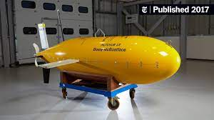

Boaty McBoatface’s new mission is more serious than its name
The submersible is accompanied by other underwater robots as it heads off into the cold, dark underbelly of
the Thwaites Glacier.
Boaty McBoatface, the comically named autonomous submarine courtesy of a collective internet joke, will be
among a fleet of underwater robots dispatched to the underbelly of the deteriorating Thwaites glacier in
Western Antarctica.
According to a press release this week by the International Thwaites Glacier Collaboration, the crew of
robots—including Boaty McBoatface, the University of Gothenburg’s Ran, and six ocean gliders—are headed out
to Antarctica from Punta Arenas, Chile. Once they reach Thwaites, they will wander in and under the ice
shelf—illuminating its various cavities, scoping out its geometry—to quantify how it’s melting. They will
also assess the environment around the glacier, such as the seafloor below, the thick ice above, and the
properties of the seawater flowing in between the different structures.
In a study published in Science Advances last year, the team found that changes in salinity, temperature,
and oxygen can spotlight the areas where different water masses mix to influence the melting process at the
base of the ice.
The Thwaites glacier, a Florida-sized chunk of ice nicknamed the “doomsday glacier,” has been losing about
50 billion tons of ice each year (accounting for around 4 percent of global sea level rise). Preliminary
research from the American Geophysical Union estimates that in the next three to five years, the thinning
ice shelf extending from Thwaites could crumble, setting off a chain of melting events that could raise
global ocean levels up to 10 feet. Further research has indicated that the Southern Ocean is warming
Thwaites from below, slowly etching a web of cracks across the floating ice shelf.
Boaty’s job is to measure temperature, salinity, current velocity, turbulence, turbidity, and dissolved
oxygen in water as it charts a path through the icy underworld. Scientists can then use this data to
understand how variations in these conditions affect the behavior and stability of local ice shelves.
Another underwater robot, Ran, is in charge of mapping the shape of the seabed, and the expanse of caverns
and dimples covering the underside of the glacier. It will also collect samples of water for in-lab
analysis.
Boaty, the programmable robotic sub, was developed at the National Oceanography Centre. It travels on its
own to great depths on scientific missions under water and ice. As an autonomous long-range vehicle, Boaty
can traverse hundreds of miles for several months at a time. It can even venture as deep as about 3.7 miles
below the surface. Boaty completed its first under-ice operation in February 2018, when it spent 51 hours
beneath the frigid waters of the southern Weddell Sea.

The goal
Boaty will not go on this mission alone. A team of 32 international scientists is set to accompany the robot
fleet on this 65-day voyage aboard the Nathaniel B. Palmer research ship.
Since Boaty is heading into the unknown, to save it from bumping around in the dark, researchers will aid
its navigation from the ship using a command and control system the National Oceanography Centre created
that can reprogram Boaty with WiFi over satellite or an acoustic modem.
Working alongside the robots to collect data will be real-life weddell and elephant seals co-opted as moving
sensors that will gather information about water temperature and saltiness as they freely roam across the
icy ocean.